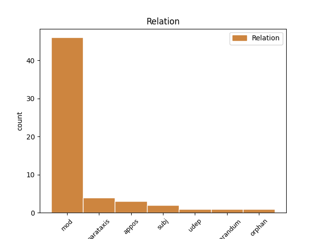
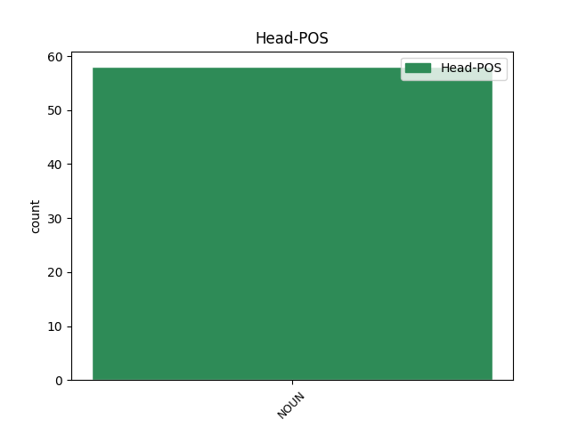
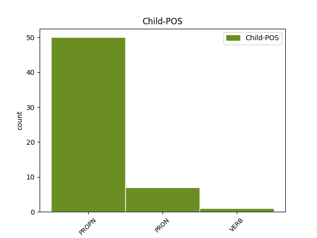

Distribution of features within this leaf



Agreement Rules sorted by frequency.
- When the dependent token is the modifer(mod) of the head token, and the head token is NOUN and the dependent token is PROPN.
1 ja _ _ _ _ 0 _ _ _
2 … _ _ _ _ 0 _ _ _
3 jaz _ _ _ _ 0 _ _ _
4 sem _ _ _ _ 0 _ _ _
5 pa _ _ _ _ 0 _ _ _
6 tu _ _ _ _ 0 _ _ _
7 v _ _ _ _ 0 _ _ _
8 vznožju vznožje NOUN Ncnsl Case=Loc|Gender=Neut|Number=Sing 0 _ _ _
9 pohorja Pohorje PROPN Npnsg Case=Gen|Gender=Neut|Number=Sing 8 mod _ msd=Slser|word=Poharja
10 zelenega _ _ _ _ 0 _ _ _
11 pohorja _ _ _ _ 0 _ _ _
12 [gap] _ _ _ _ 0 _ _ _
1 tudi _ _ _ _ 0 _ _ _
2 drugi _ _ _ _ 0 _ _ _
3 napadalec napadalec NOUN Ncmsn Case=Nom|Gender=Masc|Number=Sing 0 _ _ _
4 izjemni _ _ _ _ 0 _ _ _
5 david David PROPN Npmsn Case=Nom|Gender=Masc|Number=Sing 3 appos _ msd=Slmei|word=Dejvid
6 healy _ _ _ _ 0 _ _ _
7 je _ _ _ _ 0 _ _ _
8 imel _ _ _ _ 0 _ _ _
9 priložnost _ _ _ _ 0 _ _ _
10 da _ _ _ _ 0 _ _ _
11 premaga _ _ _ _ 0 _ _ _
12 arturja _ _ _ _ 0 _ _ _
13 boruca _ _ _ _ 0 _ _ _
14 toda _ _ _ _ 0 _ _ _
15 tudi _ _ _ _ 0 _ _ _
16 njemu _ _ _ _ 0 _ _ _
17 to _ _ _ _ 0 _ _ _
18 ni _ _ _ _ 0 _ _ _
19 uspelo _ _ _ _ 0 _ _ _
1 vaš _ _ _ _ 0 _ _ _
2 komentar komentar NOUN Ncmsn Case=Nom|Gender=Masc|Number=Sing 0 _ _ _
3 kaj _ _ _ _ 0 _ _ _
4 pravzaprav _ _ _ _ 0 _ _ _
5 vi _ _ _ _ 0 _ _ _
6 eee _ _ _ _ 0 _ _ _
7 o _ _ _ _ 0 _ _ _
8 tem _ _ _ _ 0 _ _ _
9 mmm _ _ _ _ 0 _ _ _
10 menite _ _ _ _ 0 _ _ _
11 kako _ _ _ _ 0 _ _ _
12 ste _ _ _ _ 0 _ _ _
13 videli _ _ _ _ 0 _ _ _
14 nebesedno _ _ _ _ 0 _ _ _
15 k _ _ _ _ 0 _ _ _
16 [gap] _ _ _ _ 0 _ _ _
17 komunikacijo _ _ _ _ 0 _ _ _
18 ste _ _ _ _ 0 _ _ _
19 pozorni _ _ _ _ 0 _ _ _
20 na _ _ _ _ 0 _ _ _
21 eem _ _ _ _ 0 _ _ _
22 govorce _ _ _ _ 0 _ _ _
23 pet _ _ _ _ 0 _ _ _
24 jih _ _ _ _ 0 _ _ _
25 je _ _ _ _ 0 _ _ _
26 bilo _ _ _ _ 0 _ _ _
27 kdo kdo PRON Pq-msn Case=Nom|Gender=Masc|Number=Sing|PronType=Int 2 parataxis _ msd=Zv-mei|word=kdo
28 kako _ _ _ _ 0 _ _ _
1 anja Anja PROPN Npfsn Case=Nom|Gender=Fem|Number=Sing 5 subj _ msd=Slzei|word=Anja
2 parson _ _ _ _ 0 _ _ _
3 torej _ _ _ _ 0 _ _ _
4 prva _ _ _ _ 0 _ _ _
5 smučarka smučarka NOUN Ncfsn Case=Nom|Gender=Fem|Number=Sing 0 _ _ _
6 ki _ _ _ _ 0 _ _ _
7 je _ _ _ _ 0 _ _ _
8 ostala _ _ _ _ 0 _ _ _
9 danes _ _ _ _ 0 _ _ _
10 brez _ _ _ _ 0 _ _ _
11 uvrstitve _ _ _ _ 0 _ _ _
12 in _ _ _ _ 0 _ _ _
13 tako _ _ _ _ 0 _ _ _
14 je _ _ _ _ 0 _ _ _
15 morda _ _ _ _ 0 _ _ _
16 tudi _ _ _ _ 0 _ _ _
17 zapravila _ _ _ _ 0 _ _ _
18 tretje _ _ _ _ 0 _ _ _
19 mesto _ _ _ _ 0 _ _ _
20 bronasto _ _ _ _ 0 _ _ _
21 medaljo _ _ _ _ 0 _ _ _
22 v _ _ _ _ 0 _ _ _
23 skupnem _ _ _ _ 0 _ _ _
24 seštevku _ _ _ _ 0 _ _ _
25 svetovnega _ _ _ _ 0 _ _ _
26 pokala _ _ _ _ 0 _ _ _
27 kajti _ _ _ _ 0 _ _ _
28 kathrin _ _ _ _ 0 _ _ _
29 zettel _ _ _ _ 0 _ _ _
30 zaostaja _ _ _ _ 0 _ _ _
31 petinštirideset _ _ _ _ 0 _ _ _
32 točk _ _ _ _ 0 _ _ _
33 za _ _ _ _ 0 _ _ _
34 parsonovo _ _ _ _ 0 _ _ _
1 same _ _ _ _ 0 _ _ _
2 njene _ _ _ _ 0 _ _ _
3 ne _ _ _ _ 0 _ _ _
4 kolegice kolegica NOUN Ncfpn Case=Nom|Gender=Fem|Number=Plur 0 _ _ _
5 dve _ _ _ _ 0 _ _ _
6 sem _ _ _ _ 0 _ _ _
7 samo _ _ _ _ 0 _ _ _
8 poznala _ _ _ _ 0 _ _ _
9 od _ _ _ _ 0 _ _ _
10 prej _ _ _ _ 0 _ _ _
11 treh _ _ _ _ 0 _ _ _
12 pa _ _ _ _ 0 _ _ _
13 tri _ _ _ _ 0 _ _ _
14 sem _ _ _ _ 0 _ _ _
15 pa _ _ _ _ 0 _ _ _
16 prvič _ _ _ _ 0 _ _ _
17 videla videti VERB Vmbp-sf Gender=Fem|Number=Sing|VerbForm=Part 4 parataxis _ msd=Ggvd-ez|word=vidla
1 [name:personal] _ _ _ _ 0 _ _ _
2 pravi _ _ _ _ 0 _ _ _
3 ka _ _ _ _ 0 _ _ _
4 si _ _ _ _ 0 _ _ _
5 je _ _ _ _ 0 _ _ _
6 ka _ _ _ _ 0 _ _ _
7 si _ _ _ _ 0 _ _ _
8 je _ _ _ _ 0 _ _ _
9 zapomnil _ _ _ _ 0 _ _ _
10 in _ _ _ _ 0 _ _ _
11 ka _ _ _ _ 0 _ _ _
12 bo _ _ _ _ 0 _ _ _
13 rdeča _ _ _ _ 0 _ _ _
14 vrtnica _ _ _ _ 0 _ _ _
15 od _ _ _ _ 0 _ _ _
16 viktorije _ _ _ _ 0 _ _ _
17 pozdrave pozdrav NOUN Ncmpa Case=Acc|Gender=Masc|Number=Plur 0 _ _ _
18 še _ _ _ _ 0 _ _ _
19 nekomu nekdo PRON Pi-msd Case=Dat|Gender=Masc|Number=Sing|PronType=Ind 17 orphan _ msd=Zn-med|word=nekomi
1 če _ _ _ _ 0 _ _ _
2 je _ _ _ _ 0 _ _ _
3 jurija Jurij PROPN Npmsg Case=Gen|Gender=Masc|Number=Sing 4 udep _ msd=Slmer|word=Jurja
4 dež dež NOUN Ncmsn Case=Nom|Gender=Masc|Number=Sing 0 _ _ _
5 in _ _ _ _ 0 _ _ _
6 na _ _ _ _ 0 _ _ _
7 petra _ _ _ _ 0 _ _ _
8 suša _ _ _ _ 0 _ _ _
9 se _ _ _ _ 0 _ _ _
10 raduje _ _ _ _ 0 _ _ _
11 kmetova _ _ _ _ 0 _ _ _
12 duša _ _ _ _ 0 _ _ _
13 to _ _ _ _ 0 _ _ _
14 je _ _ _ _ 0 _ _ _
15 ona _ _ _ _ 0 _ _ _
16 rekla _ _ _ _ 0 _ _ _
1 to _ _ _ _ 0 _ _ _
2 pa _ _ _ _ 0 _ _ _
3 ne _ _ _ _ 0 _ _ _
4 bo _ _ _ _ 0 _ _ _
5 šlo _ _ _ _ 0 _ _ _
6 mi _ _ _ _ 0 _ _ _
7 zdaj _ _ _ _ 0 _ _ _
8 govorimo _ _ _ _ 0 _ _ _
9 o _ _ _ _ 0 _ _ _
10 kroženju kroženje NOUN Ncnsl Case=Loc|Gender=Neut|Number=Sing 0 _ _ _
11 česa kaj PRON Pq-nsg Case=Gen|Gender=Neut|Number=Sing|PronType=Int 10 mod _ msd=Zv-ser|word=česa
12 ? _ _ _ _ 0 _ _ _
Disagree Examples:
1 ja _ _ _ _ 0 _ _ _
2 e _ _ _ _ 0 _ _ _
3 [gap] _ _ _ _ 0 _ _ _
4 če _ _ _ _ 0 _ _ _
5 smo _ _ _ _ 0 _ _ _
6 že _ _ _ _ 0 _ _ _
7 prvega _ _ _ _ 0 _ _ _
8 mentorja _ _ _ _ 0 _ _ _
9 uvedli _ _ _ _ 0 _ _ _
10 [gap] _ _ _ _ 0 _ _ _
11 eee _ _ _ _ 0 _ _ _
12 omenili _ _ _ _ 0 _ _ _
13 ne _ _ _ _ 0 _ _ _
14 to _ _ _ _ 0 _ _ _
15 je _ _ _ _ 0 _ _ _
16 bil _ _ _ _ 0 _ _ _
17 eee _ _ _ _ 0 _ _ _
18 zlatko _ _ _ _ 0 _ _ _
19 verzelak _ _ _ _ 0 _ _ _
20 eee _ _ _ _ 0 _ _ _
21 sem _ _ _ _ 0 _ _ _
22 potem _ _ _ _ 0 _ _ _
23 naslednje _ _ _ _ 0 _ _ _
24 leto _ _ _ _ 0 _ _ _
25 ko _ _ _ _ 0 _ _ _
26 je _ _ _ _ 0 _ _ _
27 ta _ _ _ _ 0 _ _ _
28 skupina _ _ _ _ 0 _ _ _
29 tu _ _ _ _ 0 _ _ _
30 razpadla _ _ _ _ 0 _ _ _
31 v _ _ _ _ 0 _ _ _
32 bistrici _ _ _ _ 0 _ _ _
33 sodeloval _ _ _ _ 0 _ _ _
34 z _ _ _ _ 0 _ _ _
35 enim _ _ _ _ 0 _ _ _
36 eee _ _ _ _ 0 _ _ _
37 lutkovnim _ _ _ _ 0 _ _ _
38 režiserjem _ _ _ _ 0 _ _ _
39 in _ _ _ _ 0 _ _ _
40 tudi _ _ _ _ 0 _ _ _
41 bivšim _ _ _ _ 0 _ _ _
42 direktorjem _ _ _ _ 0 _ _ _
43 lutkovnega _ _ _ _ 0 _ _ _
44 gledališča gledališče NOUN Ncnsg Case=Gen|Gender=Neut|Number=Sing 0 _ _ _
45 maribor Maribor PROPN Npmsn Case=Nom|Gender=Masc|Number=Sing 44 mod _ msd=Slmei|word=Maribor
46 gospodom _ _ _ _ 0 _ _ _
47 bojanom _ _ _ _ 0 _ _ _
48 čebuljem _ _ _ _ 0 _ _ _
49 na _ _ _ _ 0 _ _ _
50 ptuju _ _ _ _ 0 _ _ _
1 seveda _ _ _ _ 0 _ _ _
2 pa _ _ _ _ 0 _ _ _
3 vemo _ _ _ _ 0 _ _ _
4 da _ _ _ _ 0 _ _ _
5 še _ _ _ _ 0 _ _ _
6 vedno _ _ _ _ 0 _ _ _
7 tudi _ _ _ _ 0 _ _ _
8 oddaja _ _ _ _ 0 _ _ _
9 televizijska _ _ _ _ 0 _ _ _
10 in _ _ _ _ 0 _ _ _
11 radijska _ _ _ _ 0 _ _ _
12 postaja postaja NOUN Ncfsn Case=Nom|Gender=Fem|Number=Sing 0 _ _ _
13 hamasa Hamas PROPN Npmsg Case=Gen|Gender=Masc|Number=Sing 12 mod _ msd=Slmer|word=Hamasa
1 eee _ _ _ _ 0 _ _ _
2 televizijska _ _ _ _ 0 _ _ _
3 postaja postaja NOUN Ncfsn Case=Nom|Gender=Fem|Number=Sing 0 _ _ _
4 hezbolah Hezbolah PROPN Npmsn Case=Nom|Gender=Masc|Number=Sing 3 mod _ msd=Slmei|word=Hesbolah
5 ki _ _ _ _ 0 _ _ _
6 obširno _ _ _ _ 0 _ _ _
7 o _ _ _ _ 0 _ _ _
8 tem _ _ _ _ 0 _ _ _
9 poroča _ _ _ _ 0 _ _ _
10 al _ _ _ _ 0 _ _ _
11 džazira _ _ _ _ 0 _ _ _
12 torej _ _ _ _ 0 _ _ _
13 arabski _ _ _ _ 0 _ _ _
14 mediji _ _ _ _ 0 _ _ _
15 so _ _ _ _ 0 _ _ _
16 zelo _ _ _ _ 0 _ _ _
17 dejavni _ _ _ _ 0 _ _ _
18 jih _ _ _ _ 0 _ _ _
19 spremljamo _ _ _ _ 0 _ _ _
20 in _ _ _ _ 0 _ _ _
21 tako _ _ _ _ 0 _ _ _
22 dobivamo _ _ _ _ 0 _ _ _
23 tudi _ _ _ _ 0 _ _ _
24 informacije _ _ _ _ 0 _ _ _
25 z _ _ _ _ 0 _ _ _
26 druge _ _ _ _ 0 _ _ _
27 strani _ _ _ _ 0 _ _ _
28 čeprav _ _ _ _ 0 _ _ _
29 ne _ _ _ _ 0 _ _ _
30 s _ _ _ _ 0 _ _ _
31 prve _ _ _ _ 0 _ _ _
32 roke _ _ _ _ 0 _ _ _
1 med _ _ _ _ 0 _ _ _
2 manjše _ _ _ _ 0 _ _ _
3 godalne _ _ _ _ 0 _ _ _
4 zasedbe _ _ _ _ 0 _ _ _
5 spada _ _ _ _ 0 _ _ _
6 tudi _ _ _ _ 0 _ _ _
7 kvintet kvintet NOUN Ncmsn Case=Nom|Gender=Masc|Number=Sing 0 _ _ _
8 orsa Orsa PROPN Npfsn Case=Nom|Gender=Fem|Number=Sing 7 mod _ msd=Slzei|word=Orsa
9 iz _ _ _ _ 0 _ _ _
10 pokrajine _ _ _ _ 0 _ _ _
11 dalarna _ _ _ _ 0 _ _ _
12 ki _ _ _ _ 0 _ _ _
13 je _ _ _ _ 0 _ _ _
14 zaslovel _ _ _ _ 0 _ _ _
15 po _ _ _ _ 0 _ _ _
16 snemanju _ _ _ _ 0 _ _ _
17 z _ _ _ _ 0 _ _ _
18 bennyjem _ _ _ _ 0 _ _ _
19 andersonom _ _ _ _ 0 _ _ _
20 članom _ _ _ _ 0 _ _ _
21 kvarteta _ _ _ _ 0 _ _ _
22 abba _ _ _ _ 0 _ _ _
1 med _ _ _ _ 0 _ _ _
2 manjše _ _ _ _ 0 _ _ _
3 godalne _ _ _ _ 0 _ _ _
4 zasedbe _ _ _ _ 0 _ _ _
5 spada _ _ _ _ 0 _ _ _
6 tudi _ _ _ _ 0 _ _ _
7 kvintet _ _ _ _ 0 _ _ _
8 orsa _ _ _ _ 0 _ _ _
9 iz _ _ _ _ 0 _ _ _
10 pokrajine _ _ _ _ 0 _ _ _
11 dalarna _ _ _ _ 0 _ _ _
12 ki _ _ _ _ 0 _ _ _
13 je _ _ _ _ 0 _ _ _
14 zaslovel _ _ _ _ 0 _ _ _
15 po _ _ _ _ 0 _ _ _
16 snemanju _ _ _ _ 0 _ _ _
17 z _ _ _ _ 0 _ _ _
18 bennyjem _ _ _ _ 0 _ _ _
19 andersonom _ _ _ _ 0 _ _ _
20 članom _ _ _ _ 0 _ _ _
21 kvarteta kvartet NOUN Ncmsg Case=Gen|Gender=Masc|Number=Sing 0 _ _ _
22 abba Abba PROPN Npfsn Case=Nom|Gender=Fem|Number=Sing 21 mod _ msd=Slzei|word=Aba